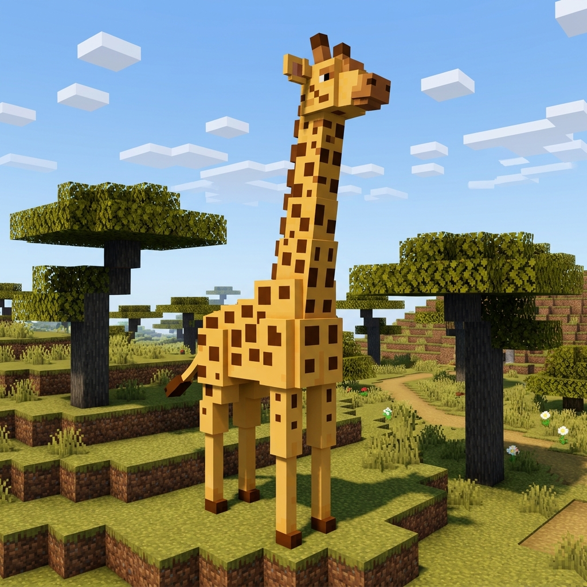

Hello, World! 👋
Welcome to my GitHub-hosted website! Meet our voxel giraffe:
🦒 Click the giraffe, explore Mystery Biomes 🎲, or watch out for Lava in the Nether!

LAYER 1: SURFACE GRASS
10/10 GRASS
LAYER 2: MYSTERY LAYER (STONE & GRASS)
CLICK TO UNCOVER
🦒 The giraffe is grazing in the Savanna! Click the giraffe or blocks below.